Navega con ← → o deslizando · Esc abre y cierra este índice · F pantalla completa · Inicio/Fin saltan a portada y referencias.
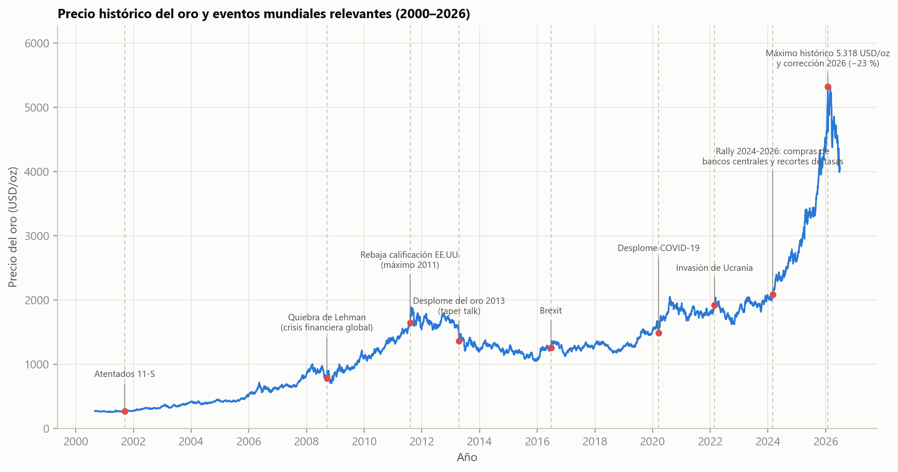
Tres tendencias en la literatura reciente (10 estudios 2022–2026 revisados):
El vacío: cuatro dimensiones que rara vez se evalúan juntas:
Predecir el log-retorno diario del oro, comparar once modelos bajo un protocolo temporal homogéneo y convertir la predicción puntual en escenarios probabilísticos de precio hasta 2035.
PI1. ¿Qué familia de modelos ofrece el mejor equilibrio entre error de validación temporal, generalización y costo computacional?
PI2. ¿Qué variables propias y macrofinancieras contribuyen a las predicciones y son coherentes con los canales económicos esperados?
PI3. ¿Cómo cambia el desempeño en episodios de estrés y qué aportan las bandas probabilísticas frente a una trayectoria puntual?
| Variable | Canal económico | Relación esperada |
|---|---|---|
| Dólar (DXY) | Moneda de denominación | Negativa, según régimen |
| Tesoro 10 años | Costo de oportunidad | Negativa |
| VIX | Estrés e incertidumbre | Positiva en estrés |
| S&P 500 | Apetito por riesgo | Negativa o no lineal |
| Plata | Factor común de metales | Positiva |
| Petróleo WTI | Inflación y costos | Positiva, según régimen |
| Memoria del oro | Persistencia y riesgo propio | No lineal |
Canales, no restricciones de signo: en crisis varios activos defensivos se mueven a la vez — por eso se usan modelos capaces de captar umbrales e interacciones.
Referencias ingenuas
Caminata aleatoria
Deriva histórica
Econométricos
ARIMA(1,0,1)
Regresión Ridge
Ensambles de árboles
Random Forest
Extra Trees
Gradient boosting
HistGradientBoosting
XGBoost · LightGBM
CatBoost
| Serie | Símbolo | Rol en el modelo |
|---|---|---|
| Oro (USD/oz) | GC=F | Variable objetivo |
| Plata (USD/oz) | SI=F | Factor común de metales |
| Petróleo WTI | CL=F | Inflación y energía |
| Índice dólar | DX-Y.NYB | Moneda de denominación |
| S&P 500 | ^GSPC | Apetito por riesgo |
| VIX | ^VIX | Estrés financiero |
| Tesoro 10 años | ^TNX | Costo de oportunidad |
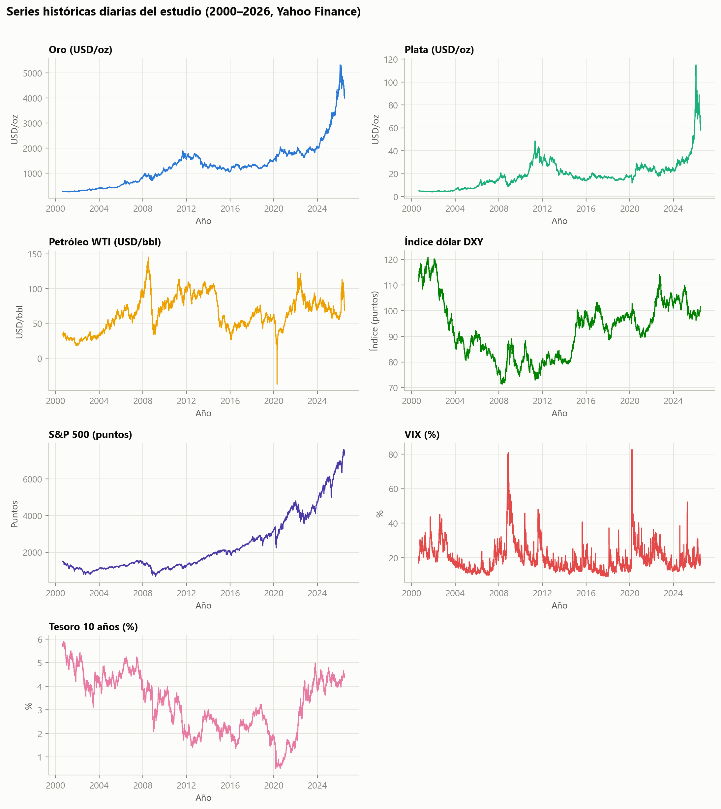
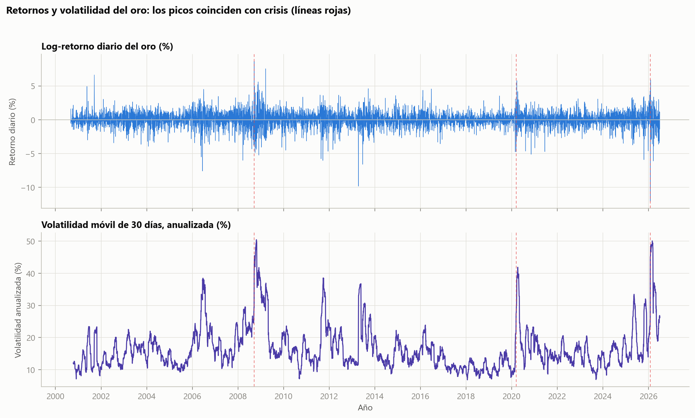
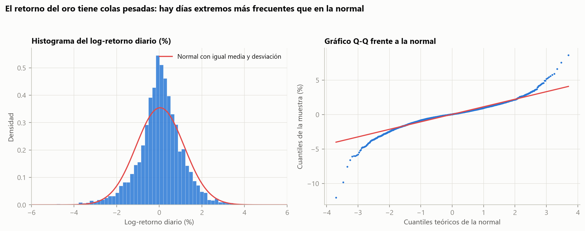
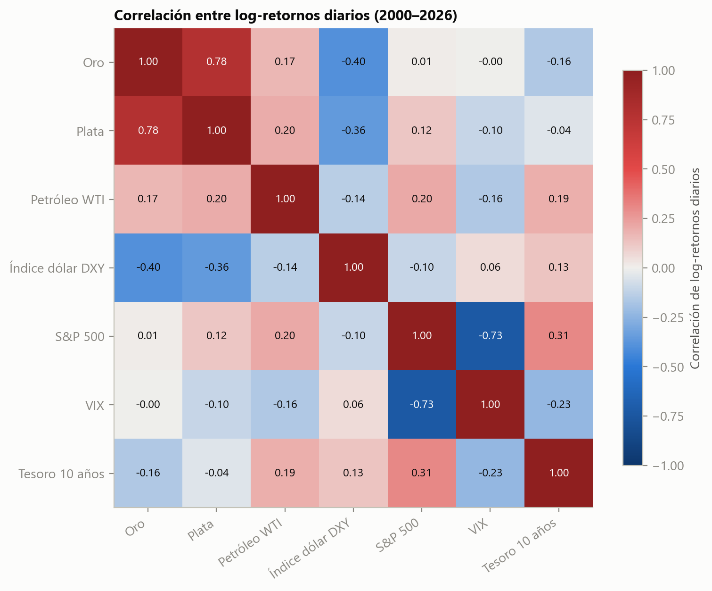
Preprocesamiento
Seis grupos de características (todas calculadas al cierre de t)
| Memoria corta | retornos rezagados 1–20 días |
| Tendencia | medias móviles, precio/SMA 10–200, momento 21 y 63 días |
| Riesgo propio | volatilidad 5–30 días, drawdown 252 días, RSI(14) |
| Exógenas | retornos de plata, WTI, DXY y S&P (1 y 5 días); razón oro/plata |
| Tasas y estrés | nivel y cambios del Tesoro 10a; VIX y su z-score de 60 días |
| Calendario | día y mes codificados con senos y cosenos |
Yahoo Finance: 7 series diarias, 2000–2026.
Calendario del oro, relleno limitado, control de atípicos.
41 variables sin fuga de información.
Partición temporal 80/20 y walk-forward.
RMSE, MAE, MAPE, R², acierto direccional y Diebold–Mariano.
Residuales, sobreajuste, ruido, estrés y SHAP.
Pronóstico recursivo + simulación Monte Carlo hasta 2035 (P10–P90).
Implementación: Python 3.13 (pandas, scikit-learn, lightgbm, xgboost, catboost, optuna, shap, statsmodels) · semilla 42 · flujo completo ≈ 2.7 min en un equipo de escritorio.
Si la prueba DM no es significativa, el modelo se adopta con cautela y se refuerza el uso de bandas de incertidumbre — exactamente lo que ocurrió.
| Hiperparámetro | Valor | Función |
|---|---|---|
| n_estimators | 1 141 | árboles del ensamble |
| learning_rate | 0.00576 | aprendizaje gradual |
| num_leaves | 54 | complejidad por árbol |
| min_child_samples | 5 | datos mínimos por hoja |
| subsample | 0.787 | submuestreo de filas |
| colsample_bytree | 0.693 | submuestreo de columnas |
| reg_alpha (L1) | 0.910 | hojas conservadoras |
| reg_lambda (L2) | 0.00174 | suaviza pesos |
| Modelo | RMSE retorno (%) | RMSE precio (USD) |
|---|---|---|
| Naive (deriva) | 1.1383 | 13.61 |
| Naive (caminata aleatoria) | 1.1383 | 13.61 |
| LightGBM + Optuna | 1.1384 | 13.61 |
| Extra Trees | 1.1483 | 13.73 |
| Random Forest | 1.1571 | 13.83 |
| CatBoost | 1.1797 | 14.10 |
| Ridge | 1.1812 | 14.06 |
| XGBoost | 1.2265 | 14.66 |
| HistGradientBoosting | 1.2499 | 14.92 |
| LightGBM (sin optimizar) | 1.2674 | 15.13 |
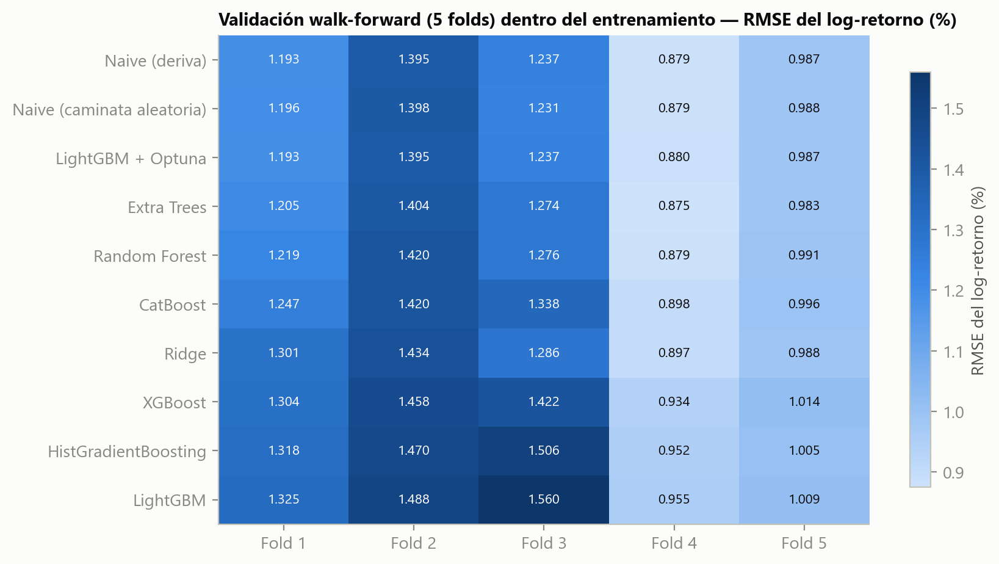
| Modelo | RMSE (USD) | MAE (USD) | MAPE (%) | R² | Acierto (%) | p (DM) |
|---|---|---|---|---|---|---|
| Random Forest | 40.97 | 23.41 | 0.819 | 0.9982 | 55.5 | 0.242 |
| Extra Trees | 41.16 | 23.45 | 0.820 | 0.9982 | 54.1 | 0.178 |
| Ridge | 41.31 | 23.58 | 0.829 | 0.9982 | 53.4 | 0.102 |
| HistGradientBoosting | 41.61 | 24.23 | 0.853 | 0.9981 | 53.9 | 0.831 |
| CatBoost | 41.64 | 23.65 | 0.826 | 0.9981 | 54.2 | 0.728 |
| LightGBM + Optuna | 41.69 | 23.51 | 0.822 | 0.9981 | 52.8 | 0.139 |
| ARIMA(1,0,1) | 41.78 | 23.54 | 0.823 | 0.9981 | 54.5 | 0.460 |
| Naive (deriva) | 41.78 | 23.55 | 0.823 | 0.9981 | 54.7 | 0.556 |
| Naive (caminata aleatoria) | 41.81 | 23.62 | 0.826 | 0.9981 | — | — |
| LightGBM (sin optimizar) | 41.91 | 24.22 | 0.854 | 0.9981 | 53.5 | 0.921 |
| XGBoost | 42.68 | 24.25 | 0.850 | 0.9980 | 52.6 | 0.255 |
1 246 observaciones (16 jul 2021 → 30 jun 2026), predicción a un paso. Random Forest logra el menor RMSE puntual, pero la selección se mantuvo a priori por validación — elegir con el test sería fuga de información. Ningún modelo supera a la caminata aleatoria al 5%.
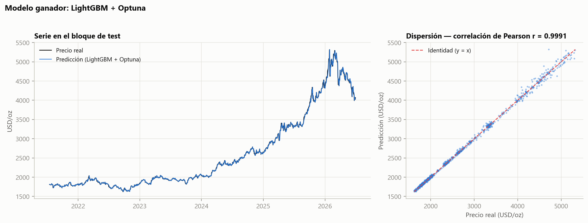
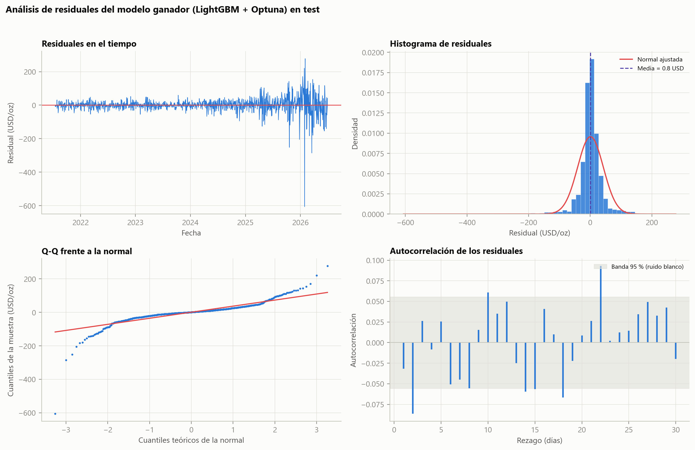
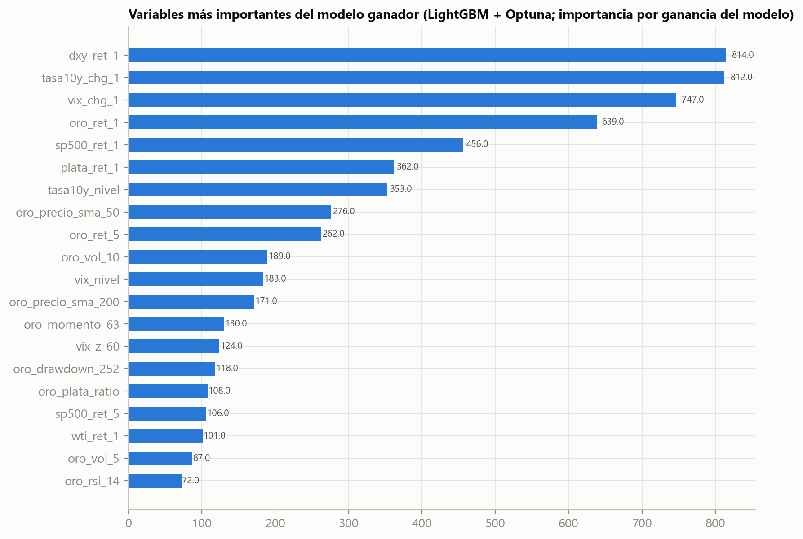
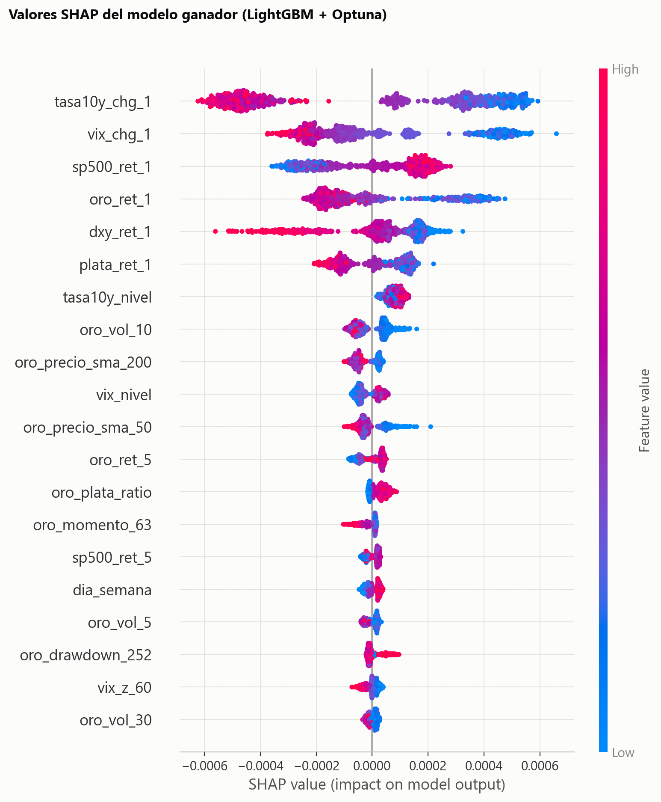
Dominan los cambios de la tasa del Tesoro a 10 años, las variaciones del VIX y los retornos de S&P 500, DXY y plata, junto con la volatilidad propia del oro y su posición frente a la SMA-200 — coherente con costo de oportunidad, refugio y moneda de denominación. SHAP explica el modelo; no es causalidad ni significancia.
| Evento | MAPE (%) | RMSE (USD) | Vol. anual (%) |
|---|---|---|---|
| Crisis financiera 2008 | 1.840 | 19.92 | 37.8 |
| Desplome COVID-19 2020 | 1.355 | 30.42 | 30.0 |
| Invasión de Ucrania 2022 | 0.885 | 21.14 | 17.6 |
| Corrección del oro 2026 | 1.450 | 87.35 | 29.9 |
| Periodo tranquilo 2017 | 0.506 | 8.14 | 10.4 |
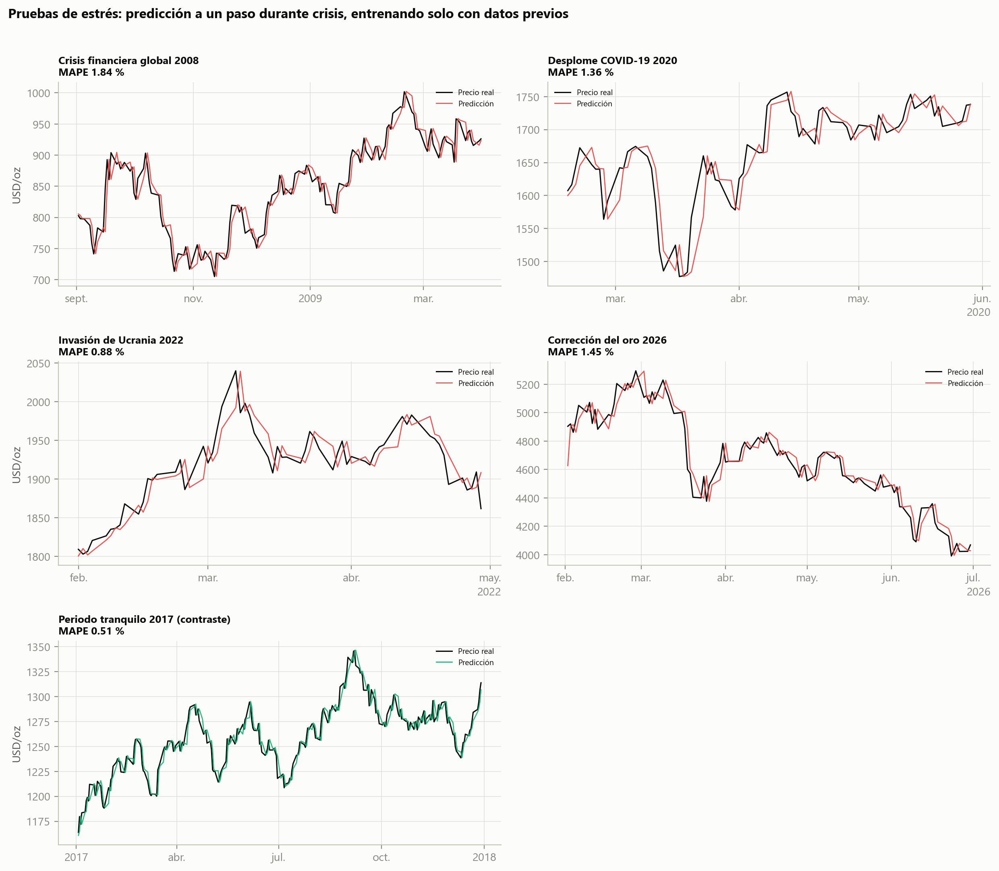
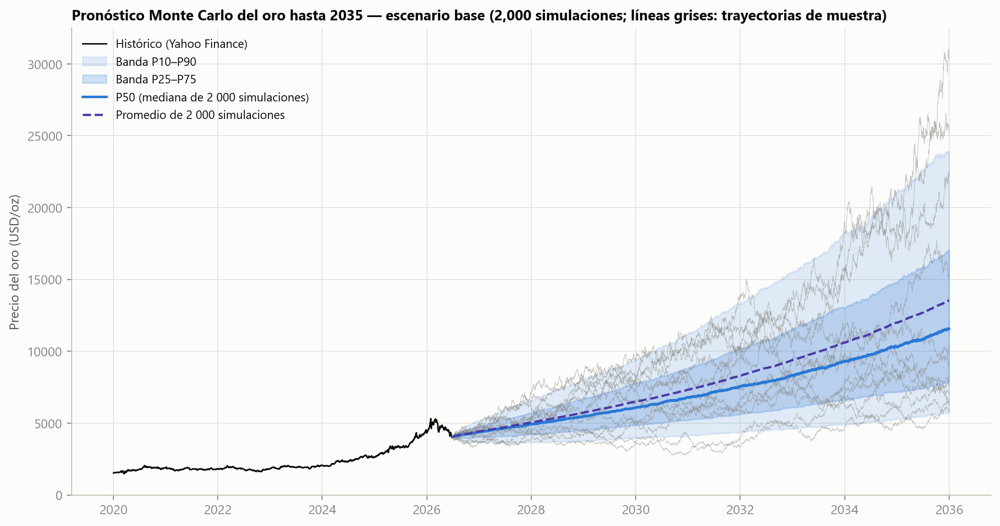
| Escenario · año | P10 | P50 | P90 |
|---|---|---|---|
| Base | |||
| 2026 | 3 712 | 4 378 | 5 187 |
| 2030 | 4 109 | 6 783 | 11 221 |
| 2035 | 5 709 | 11 558 | 23 746 |
| Crisis / alta incertidumbre | |||
| 2035 | 6 971 | 19 157 | 52 209 |
| Optimista (menor incertidumbre) | |||
| 2035 | 4 137 | 7 959 | 14 732 |
USD/oz al cierre de cada año. Para proyectos mineros: P50 como referencia central de ingresos, P10 como escenario conservador para deuda y liquidez, P90 como sensibilidad favorable — nunca como precio garantizado.
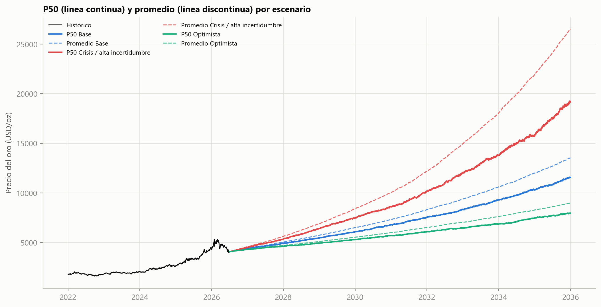
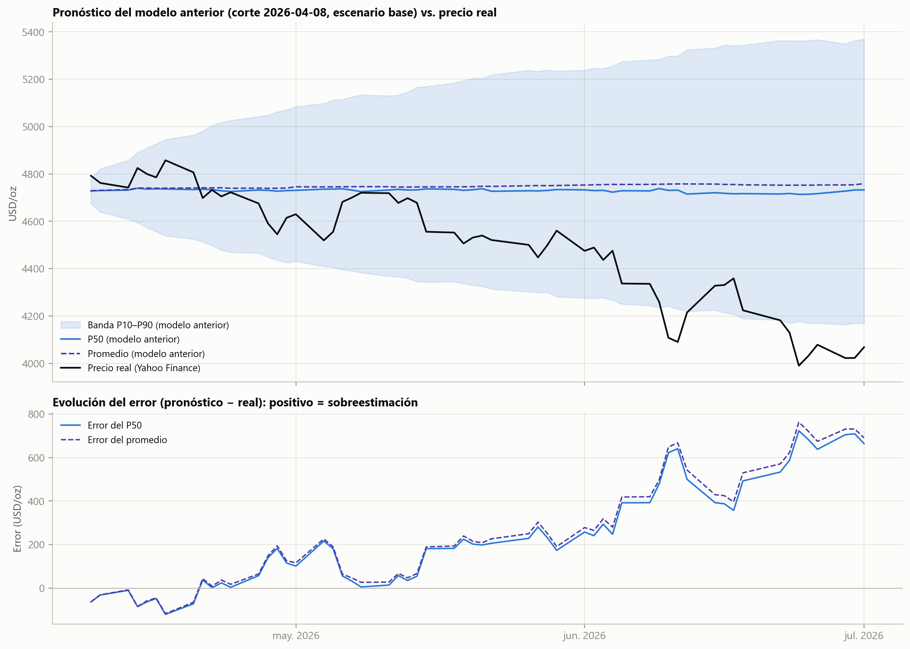
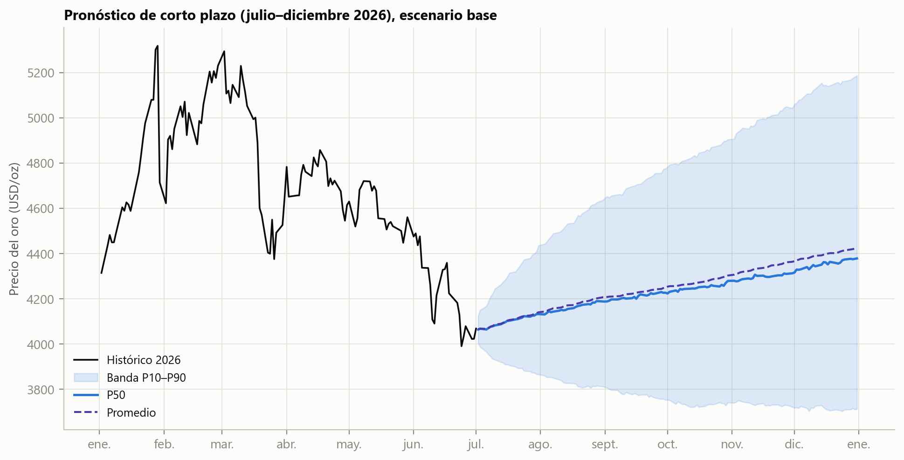
Líneas futuras: colas pesadas (t de Student, valores extremos), variables macro dinámicas y regímenes, tasas reales, flujos de ETF y compras de bancos centrales, sentimiento de noticias, y validación desde múltiples fechas de origen.
Akiba, T. et al. (2019). Optuna: A next-generation hyperparameter optimization framework. Proc. 25th ACM SIGKDD, 2623–2631.
Amini, A. & Kalantari, R. (2024). Gold price prediction by a CNN-Bi-LSTM model along with automatic parameter tuning. PLOS ONE, 19(3), e0298426.
Baur, D. G. & Lucey, B. M. (2010). Is gold a hedge or a safe haven? An analysis of stocks, bonds and gold. Financial Review, 45(2), 217–229.
Baur, D. G. & McDermott, T. K. (2010). Is gold a safe haven? International evidence. Journal of Banking & Finance, 34(8), 1886–1898.
Bloss, M., Ernst, D. & Geisinger, L. (2025). Extreme value theory and gold price extremes, 1975–2025. Commodities, 4(4), 24.
Breiman, L. (2001). Random forests. Machine Learning, 45, 5–32.
Capie, F., Mills, T. C. & Wood, G. (2005). Gold as a hedge against the dollar. J. Int. Financial Markets, Institutions and Money, 15(4), 343–352.
Chen, T. & Guestrin, C. (2016). XGBoost: A scalable tree boosting system. Proc. 22nd ACM SIGKDD, 785–794.
Diebold, F. X. & Mariano, R. S. (1995). Comparing predictive accuracy. J. Business & Economic Statistics, 13(3), 253–263.
Foroutan, P. & Lahmiri, S. (2024). Deep learning systems for forecasting the prices of crude oil, gold, silver, and natural gas. Financial Innovation, 10, 105.
Friedman, J. H. (2001). Greedy function approximation: A gradient boosting machine. Annals of Statistics, 29(5), 1189–1232.
Geurts, P., Ernst, D. & Wehenkel, L. (2006). Extremely randomized trees. Machine Learning, 63, 3–42.
Hajek, P. & Novotny, J. (2022). Fuzzy rule-based prediction of gold prices using news affect. Expert Systems with Applications, 193, 116487.
Hoerl, A. E. & Kennard, R. W. (1970). Ridge regression: Biased estimation for nonorthogonal problems. Technometrics, 12(1), 55–67.
Ji, Y. et al. (2026). Forecasting the price of gold with integrated media sentiment: CNN-QRLSTM. Entropy, 28(3), 271.
Ke, G. et al. (2017). LightGBM: A highly efficient gradient boosting decision tree. NeurIPS, 30.
Liang, Y., Lin, Y. & Lu, Q. (2022). Forecasting gold price using a novel hybrid model with ICEEMDAN and LSTM-CNN-CBAM. Expert Systems with Applications, 206, 117847.
Lundberg, S. M. & Lee, S.-I. (2017). A unified approach to interpreting model predictions. NeurIPS, 30.
Merton, R. C. (1976). Option pricing when underlying stock returns are discontinuous. J. Financial Economics, 3(1–2), 125–144.
Prokhorenkova, L. et al. (2018). CatBoost: Unbiased boosting with categorical features. NeurIPS, 31.
Quang, P. D. & Thang, T. Q. (2025). Analysis and forecasting of daily global gold price: An SARIMA-LSTM approach with random forest technique. Cogent Economics & Finance, 13(1), 2568969.
Saini, A., Singh, R. K. & Sinha, P. (2025). Forecasting gold price using hybrid deep neural network LSTM-Autoencoder. Discover Artificial Intelligence, 5, 281.
Stankovic, M. et al. (2023). Bi-directional LSTM optimization by improved teaching-learning based algorithm for univariate gold price forecasting. ICICT 2023, 1650–1657.
Taneva-Angelova, G., Raychev, S. & Ilieva, G. (2025). A framework for gold price prediction combining classical and intelligent methods. Int. J. Financial Studies, 13(2), 102.
Yang, Y. (2025). TCN-QV: An attention-based deep learning method for long sequence time-series forecasting of gold prices. PLOS ONE, 20(5), e0319776.
Yahoo Finance (2026). Historical market data: GC=F, SI=F, CL=F, DX-Y.NYB, ^GSPC, ^VIX, ^TNX. Consultado el 1 de julio de 2026.
Artículo completo: «Predicción del precio del oro con LightGBM optimizado mediante Optuna» · Ramírez, Patiño & Bedoya (2026) · dashboard interactivo del proyecto